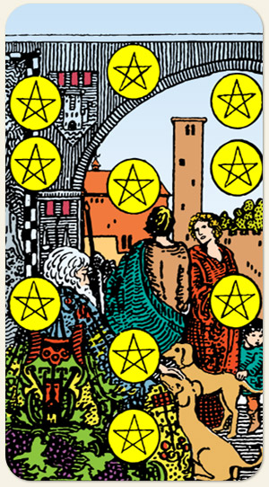

A realização da matéria. Na imagem, um senhor contemplando toda a sua riqueza material e imaterial. Ser escravo da própria riqueza. Necessidade de guardar, de contribuir, de auxiliar quem está em dificuldades, ter consciência social, saber que você e suas necessidades físicas não são o centro do universo.
A cena poderia ter terminado no Nove, muita coisa já foi conquistada, mas o Tarot mostra no Dez que, por mais que seja uma cena bonita, ainda é apenas o fundo do quintal, a entrada da casa é ainda mais linda. No negativo, é o fundo de quintal se achando o Taj Mahal.
Quando a idade vem sem maturidade ou sem vigor físico e saúde, representa beleza física. Videiras não produzem no inverno: aprender a estocar recursos. Tudo o que é matéria está sujeito ao tempo: palácios viram ruínas, porque o tempo mantém as coisas em constante transformação.
Positivo: A realização material, a materialização do sonho, usufruir de todo o trabalho, completude, uma festa bem-sucedida, abundância por todos os lados.
Negativo: Uma obra pronta, porém, inútil. Tudo o que a terra dá e não aproveita-se, apodrece, desperdício. Tudo o que o homem velho parece contemplar na imagem do Arcano é, na verdade, a ilusão de um sonho que não se concretizou. É um herdeiro que não valoriza o legado que recebeu. Estar rodeado de pessoas oportunistas, um final da vida na miséria.
Símbolos: Homem, Mulher, Criança, Sephirot, Cabelos e Barba Brancos, Lança, Cachorro, Arco, Cidade.
Cores: Amarelo, Verde, Vermelho, Azul, Laranjado.
Referências: Sephiroth.